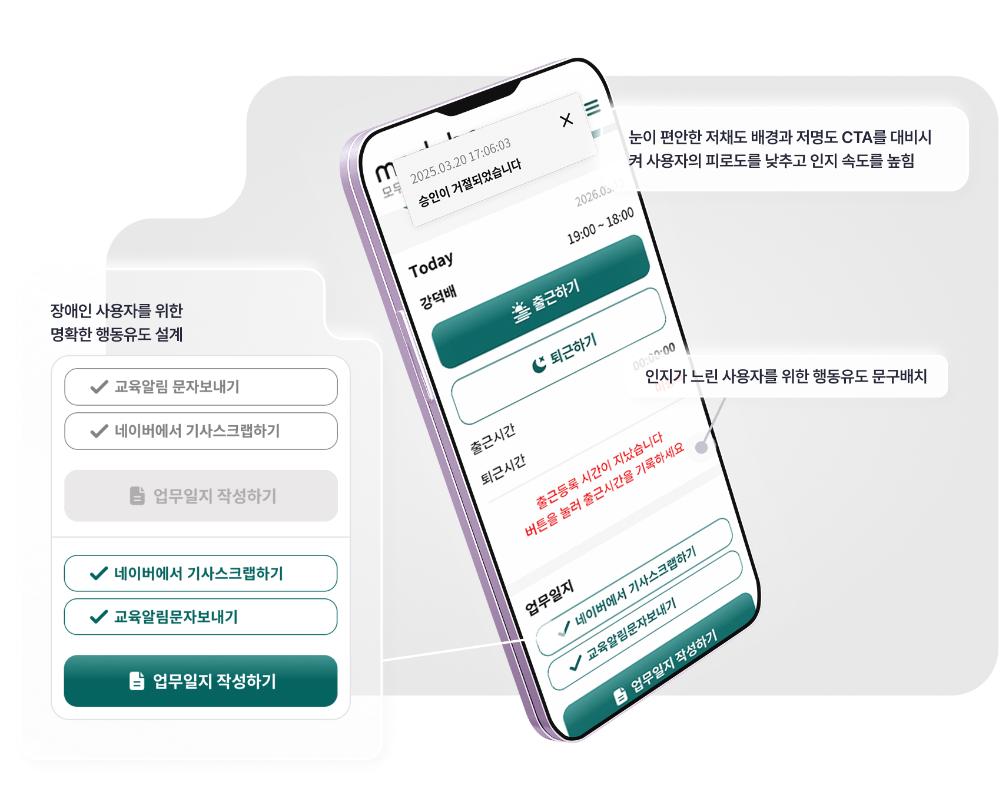
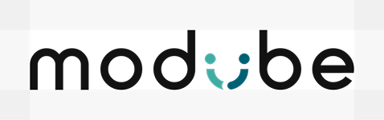
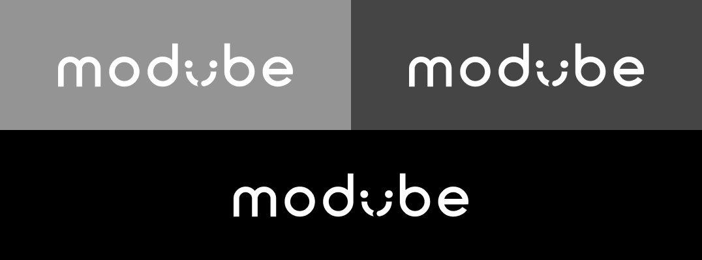
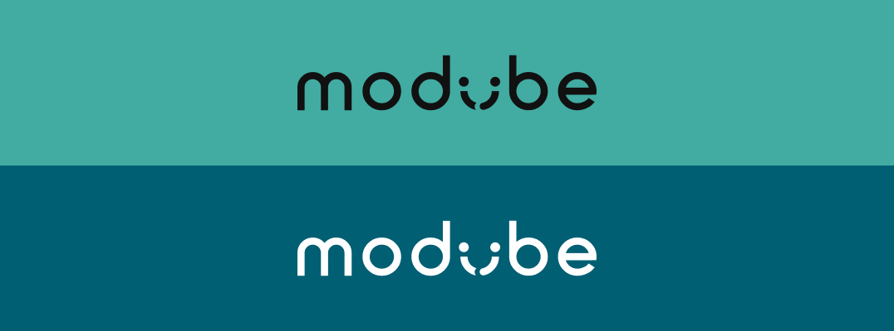
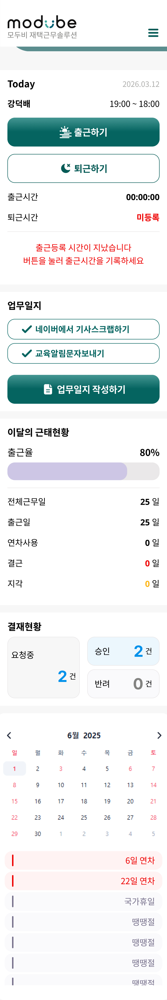
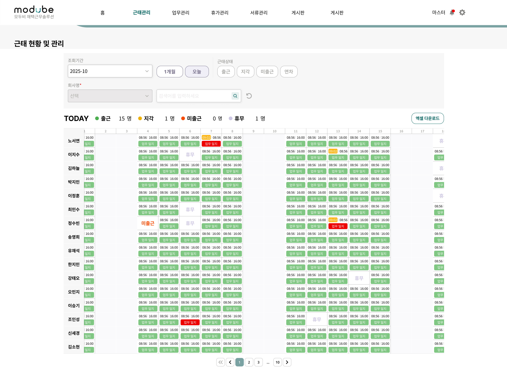
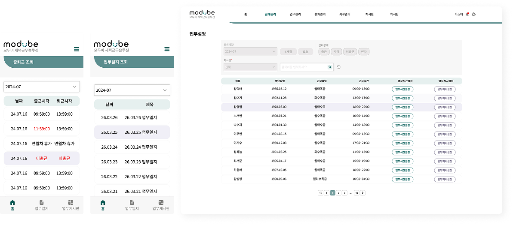
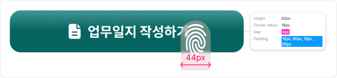
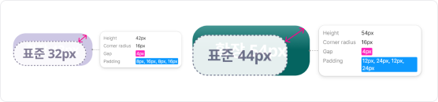

연결과 미소의 심볼 'U'
'연결'과 '미소'를 담은 로고를 통해 모두비 브랜드의 사람과 사람의 연결에 대한 따듯한 브랜드 시각 정립.

'연결'과 '미소'를 담은 로고를 통해 모두비 브랜드의 사람과 사람의 연결에 대한 따듯한 브랜드 시각 정립.
파비콘, 클리어 스페이스 등 시각적 규격 정립.



브랜드 소개사이트 컬러와 장애인 재택근무 솔루션 컬러 팔레트의 전략적 변주.
[Base tone] 고용담당자에게 희망을 전달하는 밝은 톤
브랜드사이트의 톤은 솔루션보다 밝고 생동감 있게 설정하여, 희망과 따듯한 시각을 보여줌. 장애인 고용 기업 사용자에게 장애인 고용이 가진 긍정적인 에너지와 가능성을 전달하기 위해 밝은 민트 그린을 전면에 사용.
[Solution tone] 장애인 재택근무 솔루션을 위한 변주
근로자와 관리자가 장시간 머무는 모두비솔루션에서는 업무의 집중도와 시스템의 안정감에 중점으로사용자 특성과 사용성을 고려한 컬러 톤 변경.
각각의 유저의 업무 특성을 고려한 최적화 페이지


배경 자극을 줄이고, WCAG AA 등급(4.6:1) 대비를 충족하는 컬러를 메인액션에 사용하여 사용자의 인지를 도움.
타이포, 버튼 시스템을 평균보다 1.2배 크게 디자인하여 사용자 행동의 성공율을 높힘.
다량의 엑셀데이터를 원페이지에 통합하여 동선 최소화.
시맨틱 컬러를 활용하여, 다수의 사용자 현황을 직관적으로 인지할 수 있도록 디자인.
서비스에 장시간 머무는 유저를 고려해 웜톤의 저채도 라이트 톤을 활용하여 편안한 무드를 전달.
서비스 전역에 걸쳐 동일한 UI 시스템을 공유하여 유지보수 관리성 확보.

동일한 컴포넌트를 상태만 스위칭하여 사용함으로써, 유지보수 편의성을 극대화.
스페이스 간격 중 컨텐츠에 들어가는 작은 단위를 제하고 40px, 80px, 120px 일부만 반응형으로 조정하여 코드 단축.
디자인 가이드와 코드의 간극을 줄이기 위해 개발자와 공동으로 BEM 기반의 시맨틱 네이밍 체계를 수립.
cmp-input__has-icon/default

btn_core--hasIcon는 장애인 사용자가 주요 업무에 사용하는 핵심버튼.
아이콘과 함께 강한 대비, 크기를 사용하여
인지 장애 사용자의 판단 시간을 단축.

행동 장애인 사용자를 위해 모든 버튼 크기를 상향 조정하여 표준 규격 대비 터치 허용 범위를 20%~30% 확장. 조작 실패 확률을 낮춰 사용자의 업무 편의성을 높임.
반응형 작업 시 퍼블리셔의 리소스를 줄이기 위해 고정 여백과 변형 여백 혼용 사용.
고정
4, 8, 16 px
변동
pc
40, 80, 120 px
mobile
30, 60, 80 px
타이포 (PC = Mobile 통일)
18px
사용자의 인지를 높이기 위해 18px을 기본으로, 16px을 서브로 사용.
아이콘
28px
형태를 명확하게 식별할 수 있도록 Fill 타입 아이콘을 표준으로 사용.
[장애인 사용자] 확장 스케일 시스템으로 실패확률을 줄여 업무 환경을 개선.
[관리자] 관리자가 한번에 모든 인원의 업무 및 근태 현황을 파악할 수 있도록 4개 파일의 데이터를 단일 페이지로 구조화.
[개발자] 개발자와 함께 BEM 기반 네이밍 체계를 수립하여 디자인과 코드 네이밍을 1:1로 매칭, 디자이너-퍼블리셔-개발자 간의 협업 커뮤니케이션 구축.